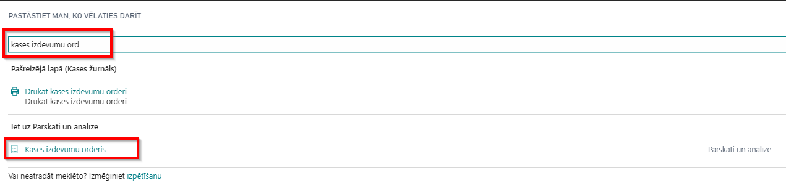

Biežāk uzdotie jautājumi
Vai ir nepieciešams specifisks Lomu centrs, lai varētu lietot aplikāciju?
Lai varētu lietot Latvian Cash Management Localization, specifisks Lomu centrs nav nepieciešams.
Vai ir kāds pamatuzstādījumu saraksts, ko vajadzētu veikt, lai varētu sākt lietot aplikāciju?
Latvian Cash Management Localization lietošanai nepieciešamie pamata uzstādījumi tiek izveidoti, attiecinot konfigurācijas pakotni LVI.LVI.CASH. Detalizētākas instrukcijas konfigurācijas pakotnes attiecināšanai ir pieejamas sadaļā Palīdzība. Lūdzu ņemiet vērā, ka korespondējošais konts katrai kases žurnāla iedaļai ir jāievada manuāli.
Man nav izveidots atsevišķa bankas kontējuma grupa maiņas naudas darījumiem. Vai man patiešām tāds ir nepieciešams?
Vietējās likumdošanas prasības pieprasa atdalīt skaidras naudas un maiņas naudas darījumus atsevišķās pozīcijās. Tādēļ ir nepieciešms izveidot atsevišķas banaks kontējumu grupas.
Vai Latvian Cash Management Localization nodrošina maiņas naudas darījumus arī citās valūtās?
Jā, Latvian Cash Management Localization nodrošina šādus darījumus arī valūtās. Lūdzu izmantojiet skata pielāgojumus, lai pievienotu valūtas lauciņu Kases žurnāla rindiņām.
Es aizmirsu izprintēt Kases žurnālā kases izdevuma orderus.Darījumi ir iegrāmatoti. Kā es varētu iegūt izdruku?
Kases izdevuma orderi var izdrukāt no iegrāmatota darījuma lietojot atskaiti Kases izdevumu orderis. Drukas iestatījumos izmantojiet filtru Bankas kontu grāmatas ieraksti. 
Vai es varu izdrukāt kases orderus latviešu valodā?
Ja jūsu sistēmas lietojuma valoda ir izvēlēta latviešu, Kases izdevumu/ieņēmumu orderu un Kases grāmatas izdrukas būs latviski.
Veicot grāmatojumu Kases žurnālā, sistēma izdeva brīdinājumu, ka Personas identifikācijas Nr. nav ievadīts. Saskaņā ar GDPR, persona drīkst neatklāt savu personas kodu. Vai šo prasību var atspējot vai izslēgt?
Personas kods skaidras naudas darījumos ir obligāts. Kad persona nevēlas atklāt savu personas kodu, lūdzu, ievadiet jebkuru skaitli Personas identifikācijas Nr. lauciņā. Šo kontroli nevar izslēgt.
Kā vajadzētu reģistrēt naudas iemaksas bankas kontā no kases un naudas iemaksas kasē no bankas konta? Bankas izrakstā var tikt atspoguļoti atšķirīgi datījumu datumi.
Gadījumiem, kad darījuma datumi atšķirsies, kontu pārskatā ir jāizveido atsevišķs konts Nauda ceļā. Maksājumu žurnāls: nauda izņemta no bankas un iegrāmatota V/G kontā Nauda ceļā:
- Dokumenta tips - Maksājums;
- Konta tips - V/G konts;
- Konta Nr - Nauda ceļā konta numurs;
- Summa - Pozitīva (Debets);
- Korespondējošā konta tips - Bankas konts;
- Korespondējošā konta Nr. - iesaistītā bankas konta numurs.
Kases žurnāls: izņemiet naudu no V/G konta Nauda ceļā un ielieciet to Maiņas naudas kasē:
- Dokumenta tips - Atmaksa;
- Konta tips - V/G konts;
- Konta Nr - Nauda ceļā konta numurs;
- Summa - Negatīva (Kredīts);
- Korespondējošā konta tips - Bankas konts;
- Korespondējošā konta Nr. - maiņas naudas bankas konta numurs.